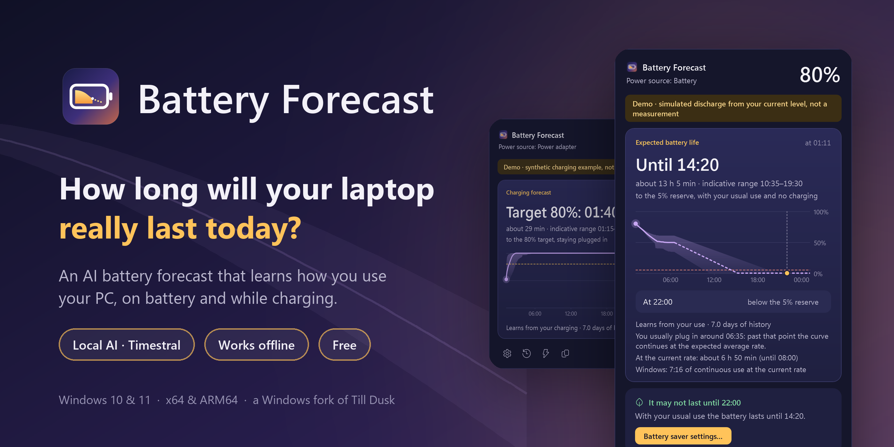
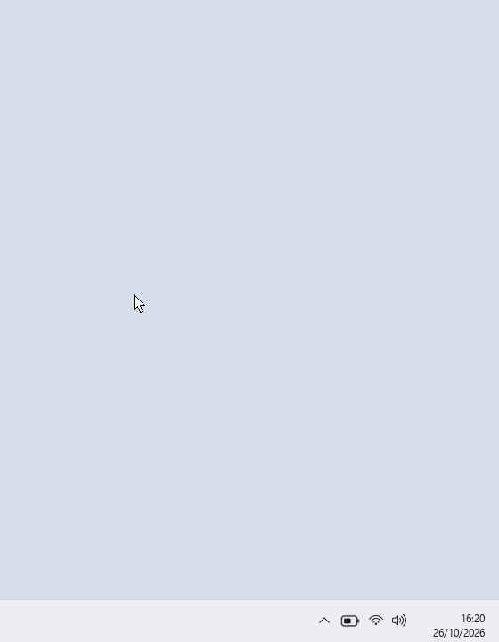
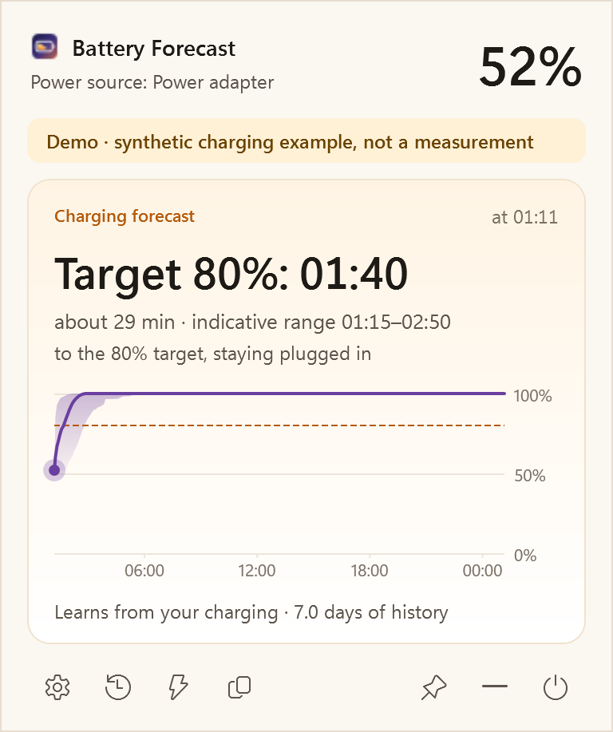
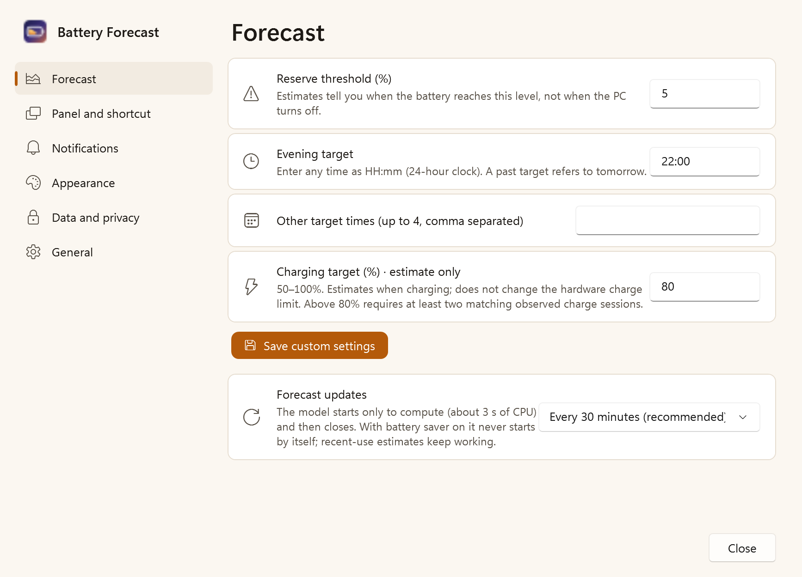
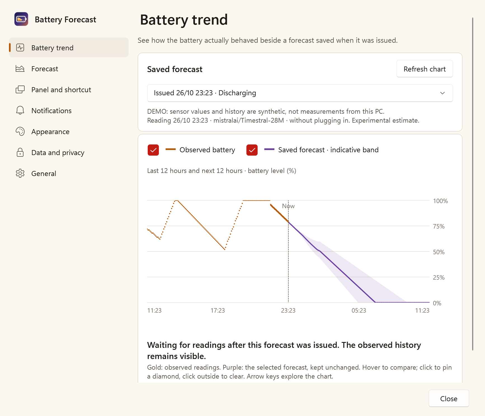

Until when
The time your battery reaches the reserve, with an honest range from cautious to optimistic. Never a fake exact number.

Windows 10 and 11 · x64 and ARM64 →How long will your laptop really last today? An AI forecast that learns how you use your PC, and runs entirely on it.
Free · MIT-licensed project code · No account · Works offline

Demo interface: synthetic history, with forecasts computed by the real local model.
Made for your day
Windows tells you a percentage. Battery Forecast tells you what it means for the rest of your day.
The time your battery reaches the reserve, with an honest range from cautious to optimistic. Never a fake exact number.
How much will be left at 22:00, or any time you choose. And a gentle hint to turn on battery saver if it won't last.
About 60, 30 and 15 minutes before the reserve, at low battery, when charged, or when something drains unusually fast. Once each.
There when you need it
Your battery forecast lives beside the clock. Reach it without leaving what you’re doing.
Hover over the battery icon to bring up the forecast.
Read your remaining time, evening level and the 24-hour curve.
Move away to close it, or click to keep it open. Your keyboard shortcut works too.

On battery and on the charger
The same local AI reads your battery history and answers the question that fits the moment: how long you will last, or when you will be charged.


Demo mode: synthetic history; the forecasts are computed by the real local model.
How it works
Every minute Battery Forecast records your battery level. A time-series AI model, Timestral by Mistral AI, reads weeks of that history and forecasts the next 24 hours.

Light on your battery
The model is not a background service. It starts to compute, answers, and closes. With battery saver on it never starts by itself.
Four themes
Dawn and Mist for light days, Dusk and Midnight for the evening, or simply follow Windows. Italian and English.


Your schedule, your machine
Choose your times, inspect the curve and see the system context behind the estimate.
Hover over the chart to move its dot and read the date, time, expected percentage and indicative range. Keyboard arrows work too.
Type any HH:mm target and up to four extra times. Open and close the panel with a shortcut you record (initially Ctrl+Alt+B), or just rest the pointer on the icon. Make the panel as large as you like.
Choose a charging target from 50–100%. While charging, the same AI learns from your past charges and tells you when you will reach it, slowdown near full included, next to the current charging rate. It does not control the hardware. When a charge limit holds the battery, it shows how long it would last if you unplugged now.
Optionally record CPU load and frequency, memory, battery watts, brightness, power profile and available temperatures. Timestral receives usable historical channels; future values are not invented.
Custom alert thresholds, quiet hours, chart visibility and a keep-open preference. Export battery and sensor CSV files.
Create a local diagnostic ZIP without battery history or logs. Nothing is uploaded automatically. Missing sensors stay unavailable; an ACPI thermal zone is not labelled CPU temperature.

Charging and sensor context are experimental. Functional tests use the real local model; accuracy gains have not been established.
New in 0.9.5
The chart and main duration follow the same AI forecast. Open Compare other estimates for the separate recent-consumption and Windows calculations, which can differ substantially. Learning status is explicit, and the time horizon follows the actual curve. Model weights and estimator calculations are unchanged.
Introduced in 0.9.2
Optional local app recording distinguishes executable names, measured CPU load and working sets. Recurring apps have separate historical model channels. Observed power associations describe the whole PC in similar conditions.
Compare original forecasts with later uninterrupted readings under similar conditions. Local rate correction starts after eight independent comparisons across three sessions, stays within ±25%, and can be disabled or reset. The AI weights stay unchanged.
Zoom Battery trend around your pointer, pan with the middle button, or use + / − / reset. Show observed and predicted curves independently; exploring does not run the model.
Brightness collection works even when optional temperature providers are unavailable. Unsupported values stay missing.
Battery and sensor means respect the time each reading represents. Rapid diagnostic refreshes no longer get extra weight.
Wake invalidates old estimates. Unobserved sleep and hibernation are excluded from active-use model time; hours asleep do not become zero-consumption usage. Screen-off activity stays distinct. Reconstructed points do not count as measurements.
Your existing history stays on your PC. App recording is off by default. New CPU intervals need about thirty minutes of varying observations; error correction needs longer comparable history and may remain inactive. Original and issued forecasts remain saved. Future app activity is unknown; a faster correction may shorten the supported chart horizon. No accuracy gain has been measured. Read the calculation method.
Introduced in 0.9.1
Turn evening goals off without losing saved times. The automatic gold dot is explicitly linked to your time goal. A small button at the far right of the forecast header starts a fresh local calculation.
Hover details stay above the chart. Click to pin a small outlined diamond; its values stay below while the moving probe continues independently.
The first settings page compares recorded battery readings with original saved forecasts and explains individual differences. Toggle observed and predicted curves independently when they overlap. Data and privacy adds observed power, CPU, memory and session display-state charts, with collection controls and missing values kept explicit. Sensor details stay in preferences.
Calculation corrections use consistent timestamps, continuous recent trends and historical context. Functional checks do not establish greater accuracy. Read how the calculation works.

Private by design
Python, PyTorch and the model ship inside the installer. Forecasts work with the network off.
Download
One installer per architecture, for your user only: no administrator rights needed.
Windows 10 (2004) or 11 · Intel/AMD x64 or ARM64 · about 280 MB download
.sha256 from the release page:
Get-FileHash .\BatteryForecast-Setup-*.exe
No forecast of the future can be. Battery Forecast shows a central estimate with a range, says which model produced it, and tells you when it is still learning. Accuracy on real laptops has not yet been measured.
It includes everything needed to run the AI offline: a private Python runtime, PyTorch for CPU and the Timestral weights. Nothing else is downloaded later.
No. It reads available battery and hardware signals locally. When battery saver would help, it opens the Windows settings page for you.